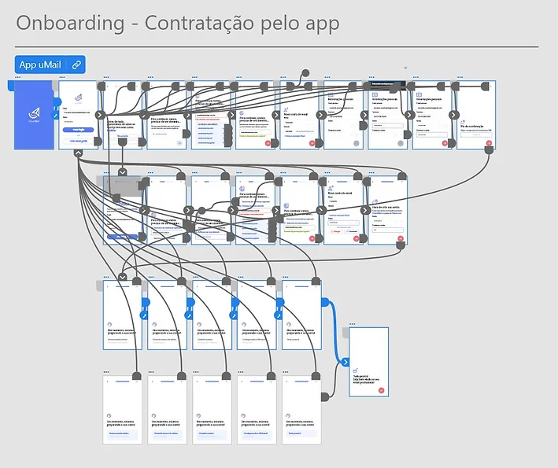
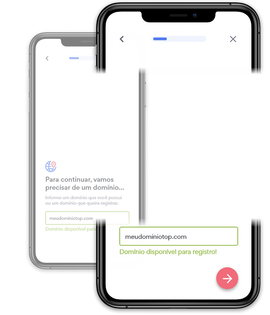

Email App Onboarding

Umbler
Onboarding
Mobile
Project
In this project, I was responsible for designing the onboarding process for Umbler’s app, ensuring it catered to Umbler’s diverse personas. The main objective was to create an onboarding experience that helps users seamlessly set up their professional email accounts with minimal hassle.
Goals
- We aimed to design an onboarding process that could accommodate a wide range of users, from those new to Umbler to seasoned clients with different levels of experience
- Our second goal was to create an interface that not only clearly communicates each step of the onboarding process but also allows users to navigate smoothly through it.
Researching the user
To kickstart the design process, we began with the empathizing phase. I conducted research with a group of 30 users familiar with Umbler’s existing tools. By leveraging pre-existing personas and making informed assumptions, I anticipated a variety of user interactions within the app. This led to the development of six key assumptions, grouped into two main categories:
Group 1
I’m not an Umbler client yet...
...but I already have a professional email registered on my domain.
...and I do not have a professional email yet.
...but I already have a domain and want to register a professional email.
Group 2
I’m not an Umbler client yet...
...but I do not have a registered domain in my account.
...and I already have my own domain and want to create a professional email with it.
...and I have multiple domains registered and want to create a professional email with one of them.
Crafting the User Flow
Before diving into high-fidelity prototyping, I developed a detailed user flow that incorporated these assumptions and explored different scenarios for the onboarding process. This user flow served as a foundational blueprint, visually communicating the envisioned outcomes to stakeholders. It also provided a clear strategy for how these concepts would influence the app’s technical development.

Designing the Onboarding Process
For existing clients
The onboarding flow for existing clients was designed to be straightforward. Users could log into their accounts and quickly follow a streamlined path to set up their email alias without any unnecessary steps.
For new clients
New users had a slightly different journey. They were guided through account creation before moving on to set up their professional email, ensuring all necessary steps were covered in a logical sequence.

Building the User Interface
To ensure a cohesive and intuitive onboarding experience, I carefully considered the placement of elements within the UI. This included:

Process Status and Return Options
We added proprietary components to track onboarding progress, allowing users to return to previous stages, improving clarity and reducing frustration.
Strategic Placement of Action Buttons
Action buttons were strategically placed for easy access on smartphone screens, ensuring smooth and efficient app navigation.
The Final User Flow
The final user flow represents a thoughtfully designed journey, tailored to the unique needs and preferences of Umbler’s diverse user base. Every aspect of the onboarding process was crafted to ensure a seamless experience, from initial login to email setup.


Final Considerations
The revamped onboarding process for the Umbler app has enabled a wide range of users to effortlessly create their accounts and get started. As the app moves into its final stages of development, we are excited for its imminent launch and the positive impact it will have on user experience.